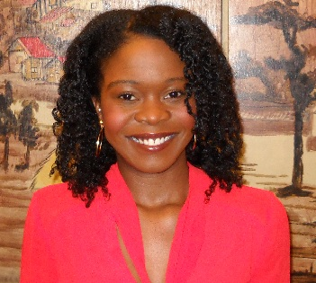

About Me
Aricka has been a journalist for over 15 years, most recently as editor-in-chief and publisher of a political news website. She has worked in radio and print for numerous media companies including CBS radio, HGTV, PBS, and Chicago Life magazine in the New York Times, among other outlets. Aricka has also previously worked in television broadcasting as an associate producer for WTTW11/PBS' public affairs news and entertainment shows and also produced shows and news segments for FOX News, HGTV and various other networks.
Ms. Flowers also worked as a online & print reporter for AOL, Chicago Life magazine in the New York Times, and numerous other publications, and was a medical writer for the American Medical Association. She was also a contributing author to the book Extraordinary Commitment: Challenges and Achievements of Today’s Working Learning, published in 2010.She is also a contributing author to the book Extraordinary Commitment: Challenges and Achievements of Today’s Working Learner, published in 2010. Aricka previously taught journalism and writing classes at the University of Illinois at Urbana-Champaign, DePaul University and the Connecticut School of Broadcasting. She is a graduate of the University of Illinois at Urbana-Champaign's undergraduate journalism program and has a master's degree from Northwestern University's Medill School of Journalism. Aricka was also handpicked to be the Northwestern University Newton N. Minow fellow.